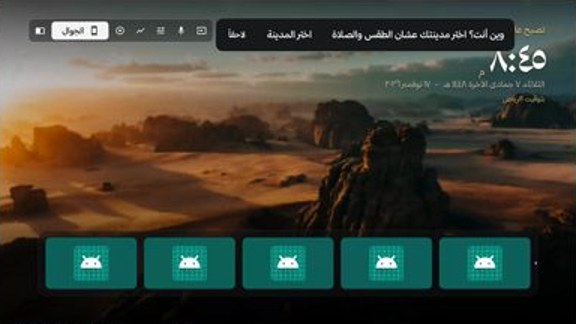
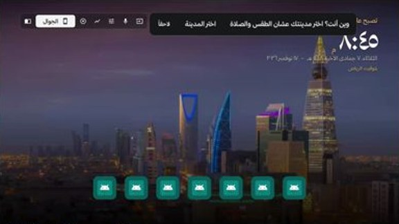
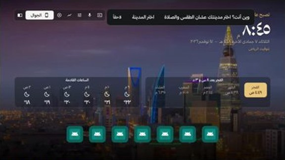
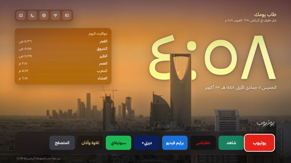
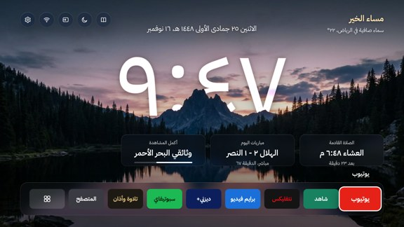

الانتقال من شكل إلى شكل
«شكلك المعتاد» ← «منظر وساعة». الصور العليا مسجّلة من المحاكي اليوم، والسفلى المقترح
اليوم: ١٫٣ ثانية، ٤ صور مختلفة، رجوع إلى الشكل القديم ثم انطفاء ثم بناء على مراحل

+٠٫٢١ ث: الشكل القديم يظهر

+٠٫٥١ ث: انطفاء
+٠٫٦٨ ث: الأفق بلا بطاقات

+١٫٣ ث: البطاقات تقفز
المقترح: الشكل الجديد يُبنى خلف صورة ثابتة من الشاشة الحالية، ثم تلاشٍ واحد ٢٥٠ م.ث، صفر إطارات فارغة

موافق: صورة من الشاشة الحالية تغطيها

خلفها: كل شيء يتغيّر ويُرسم مرة

+٢٥٠ م.ث: الشكل الجديد كاملًا

التركيز على نفس التطبيق